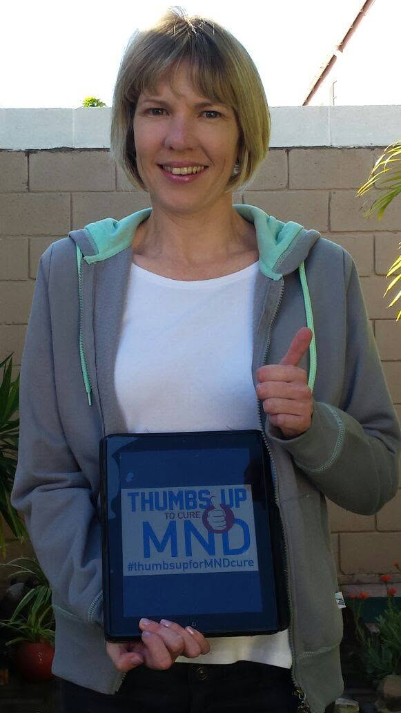
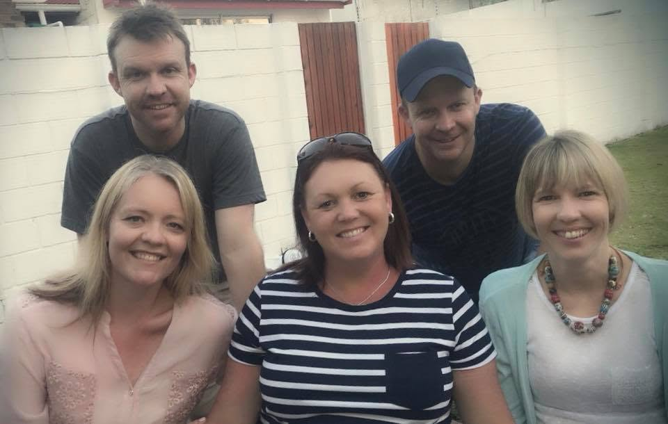
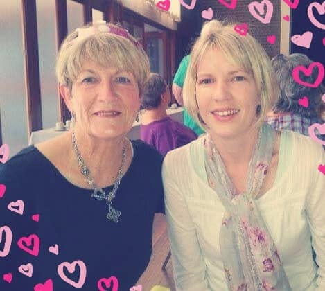

Her story. Our movement.
Meet Kath
A much-loved person at the heart of KathRUN.
Katherine Grunewald
A wonderful person: hearty, full of joy, and someone who does not give up.
Kath is living with Motor Neuron Disease (MND/ALS), a progressive neurological condition that gradually affects movement, speech, swallowing, and breathing. Her mind remains fully aware, and she is still herself: present, thoughtful, and deeply loved.
Those who know her describe a woman with a big heart and a joy that fills a room. Even as MND/ALS changes what her body can do, her spirit has not changed. She keeps going, and she keeps others going with her.
[One or two sentences about what Kath loves: her passions, her humour, what makes her laugh. To be supplied by Kath or her family.]

A family movement
Started with family. Open to everyone.
KathRUN began with her family. Her son, Ethan Grunewald, and his uncle, Richard Farrer, started this movement for Kath, and for everyone who is living with, or caring for someone with, MND/ALS in South Africa.
[A short note from Ethan and Richard: why they started KathRUN and what they hope it becomes.]

In Kath's words
A message from Kath
“[A short message from Kath, in her own words.]”
About the KathRUN Movement
Movement with meaning.
MND/ALS takes away movement one muscle at a time. KathRUN invites you to use the movement you still have, whether you run, walk, ride, swim, or wheel, and to say to Kath, and to everyone facing this disease:
Why KathRUN exists
- Support Kath's care and medical needs.
- Raise awareness of ALS/MND in South Africa.
- Honour dignity and agency in the face of loss.
- Give people a meaningful way to stand in solidarity.

Not speed. Not performance. Not comparison. Just people choosing to move – together – while they still can.
The people beside us
Moments with family.
A few family photographs shared for KathRUN.



Move together. Make it matter.
Every mile matters.
All donations go through the official BackaBuddy page.